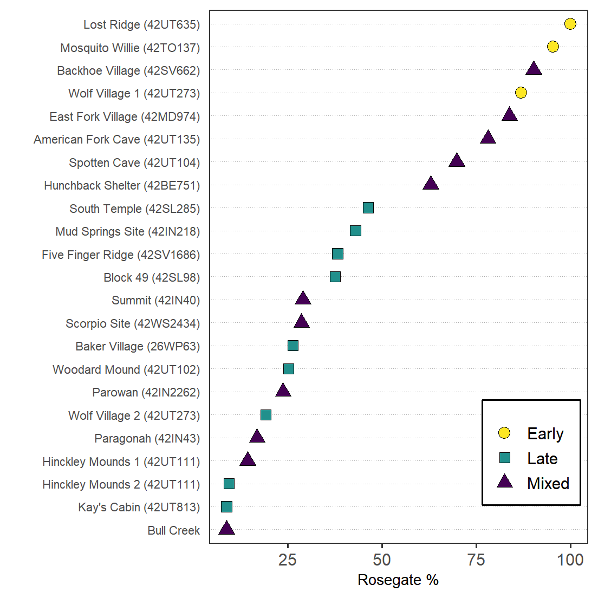

Code to Reproduce Analysis and Figures
This is the R code used for analysis and to create many of the figures in the paper Rosegate Projectile Points in the Fremont Region by Robert J. Bischoff and James R. Allison.
Note: spatial analysis and data cannot be made publicly available. Please contact the authors for more information.
Load packages
knitr::opts_chunk$set(cache=TRUE, echo =TRUE)
library(tidyverse)
library(magrittr)
library(ggthemes)
library(rio)
library(officer)
library(flextable)
library(huxtable)
library(Bchron)
library(osfr)
library(Momocs)
library(umap)Customize ggplot themes
This is a custom theme to style the dot plot.
theme_dotplot <- theme_bw(14) +
theme(axis.text.y = element_text(size = rel(.75)),
axis.ticks.y = element_blank(),
axis.title.x = element_text(size = rel(.75)),
panel.grid.major.x = element_blank(),
panel.grid.major.y = element_line(size = .25, linetype = "dotted",
color = "darkgray"),
panel.grid.minor.x = element_blank())
theme_set(theme_gdocs())Download the data from OSF
# download all files from repository
project <- osf_retrieve_node("3ufte") %>%
osf_ls_files() %>%
osf_download(conflicts = 'skip')Load projectile point data
# load
projData <- import("Fremont Projectile Point Data.xlsx",
setclass = "tibble")
# add percentages
projData %<>%
mutate(`Total Dart Points` = case_when(is.na(`Total Dart Points`) ~ 0,
TRUE ~ `Total Dart Points`),
ArrowPoints = `Total Projectile Points` - `Total Dart Points`,
`Rosegate % of All Points` =
round(`Total Rosegate Points`/`Total Projectile Points`,3)*100,
`Rosegate % of Arrow Points` =
round(`Total Rosegate Points`/ArrowPoints,3)*100)Radiocarbon Analysis
radiocarbonData <- import("Rosegate Supplemental Table 1.xlsx")
# calibrate
calib <- with(radiocarbonData,
BchronCalibrate(
ages = `Radiocarbon Age`,
ageSds = Error,
calCurves = rep('intcal20',
nrow(radiocarbonData)),
ids = `Lab Number`))
# get summary statistics and join to original table
date_samples <- sampleAges(calib)
sampleMedians <- apply(date_samples,2,median)
# table to combine projData with radiocarbonData
key <- structure(
list(
`Site Name` = c(
"Bull Creek",
"Backhoe Village",
"Baker Village",
"Block 49",
"East Fork Village",
"Five-Finger Ridge",
"Hinckley Mounds",
"Hinckley Mounds",
"Hunchback Shelter",
"Kays Cabin",
"Mosquito Willie",
"Paragonah",
"Scorpio Site",
"South Temple",
"Spotten Cave",
"Evans Mound",
"Wolf Village 1",
"Wolf Village 2",
"Woodard Mound"
),
Site = c(
"Bull Creek",
"Backhoe Village (42SV662)",
"Baker Village (26WP63)",
"Block 49 (42SL98)",
"East Fork Village (42MD974)",
"Five Finger Ridge (42SV1686)",
"Hinckley Mounds 1 (42UT111)",
"Hinckley Mounds 2 (42UT111)",
"Hunchback Shelter (42BE751)",
"Kay's Cabin (42UT813)",
"Mosquito Willie (42TO137)",
"Paragonah (42IN43)",
"Scorpio Site (42WS2434)",
"South Temple (42SL285)",
"Spotten Cave (42UT104)",
"Summit (42IN40)",
"Wolf Village 1 (42UT273)",
"Wolf Village 2 (42UT273)",
"Woodard Mound (42UT102)"
)
),
row.names = c(NA,-19L),
class = c("tbl_df",
"tbl", "data.frame")
)
dateEstimates <- apply(date_samples, 2, quantile,
prob=c(0.025,0.975)) %>%
t() %>%
as_tibble(rownames = "LabNumber") %>%
mutate(ADStart = 1950 - `97.5%` %>% round(0),
ADEnd = 1950 - `2.5%` %>% round(0),
ADMedian = 1950 - sampleMedians %>% round(0)) %>%
left_join(radiocarbonData %>% rename(LabNumber = `Lab Number`)) %>%
# join to original table -- some names are different based on the names
# given to the radiocarbon dates
left_join(key) %>%
left_join(projData) %>%
relocate(Site, .after = `Site Name`) %>%
# Determine whether material is a short-lived species
mutate(Annual = case_when(
str_detect(Material,
"maize|corn|human|annual|bean") == T ~ T,
TRUE ~ F
))
# examine differences between annual dates
AnnualDiffs <- dateEstimates %>%
group_by(Annual, `Site Name`) %>%
summarize(ADMedian = mean(ADMedian)) %>%
arrange(`Site Name`)
dateEstimatesMedian <- dateEstimates %>%
group_by(`Site Name`) %>%
summarize(ADMedian = median(ADMedian),
`Rosegate % of Arrow Points` =
median(`Rosegate % of Arrow Points`)) %>%
mutate(Annual = F) %>%
bind_rows(
dateEstimates %>%
filter(Annual == T) %>%
group_by(`Site Name`, Annual) %>%
summarize(ADMedian = median(ADMedian),
`Rosegate % of Arrow Points` =
median(`Rosegate % of Arrow Points`))
) %>%
mutate(Annual = case_when(Annual == T ~ 'Annual',
Annual == F ~ 'Combined')) %>%
arrange(Annual) %>%
group_by(`Site Name`) %>%
distinct(ADMedian, .keep_all = T)
dateEstimates %<>%
mutate(Annual = case_when(Annual == T ~ 'Annual',
Annual == F ~ 'Combined')) %>%
arrange(Annual) %>%
group_by(`Site Name`) %>%
distinct(ADMedian, .keep_all = T)
# linear regression
datesLM <- lm(ADMedian ~ `Rosegate % of Arrow Points`, data = dateEstimatesMedian)
summary(datesLM)##
## Call:
## lm(formula = ADMedian ~ `Rosegate % of Arrow Points`, data = dateEstimatesMedian)
##
## Residuals:
## Min 1Q Median 3Q Max
## -231.930 -61.598 -9.285 83.060 167.790
##
## Coefficients:
## Estimate Std. Error t value Pr(>|t|)
## (Intercept) 1147.558 38.244 30.006 < 2e-16 ***
## `Rosegate % of Arrow Points` -2.188 0.700 -3.125 0.00492 **
## ---
## Signif. codes: 0 '***' 0.001 '**' 0.01 '*' 0.05 '.' 0.1 ' ' 1
##
## Residual standard error: 98.58 on 22 degrees of freedom
## Multiple R-squared: 0.3075, Adjusted R-squared: 0.276
## F-statistic: 9.768 on 1 and 22 DF, p-value: 0.004924Morphometrics
Demonstration of point outline creation
# create temporary directory to unzip images
fn = tempdir()
unzip("JPGs.zip",exdir = fn)
ls = list.files(paste0(fn,"/JPGs"),pattern = "jpg",
full.names = T)
# import images from jpgs
imgs = import_jpg(ls)## [ 1 / 242 ] Baker Village_Rosegate 1.jpg
## [ 2 / 242 ] Baker Village_Rosegate 2.jpg
## [ 3 / 242 ] Baker Village_Rosegate 3.jpg
## [ 4 / 242 ] Baker Village_Rosegate 4.jpg
## [ 5 / 242 ] Baker Village_Rosegate 5.jpg
## [ 6 / 242 ] Baker Village_Rosegate 6.jpg
## [ 7 / 242 ] Baker Village_side notch 1.jpg
## [ 8 / 242 ] Baker Village_side notch 2.jpg
## [ 9 / 242 ] Baker Village_side notch 3.jpg
## [ 10 / 242 ] Baker Village_side notch 4.jpg
## [ 11 / 242 ] Baker Village_side notch 5.jpg
## [ 12 / 242 ] Baker Village_unclassified 1.jpg
## [ 13 / 242 ] Holmer and Weder_Eastgate 1.jpg
## [ 14 / 242 ] Holmer and Weder_Eastgate 2.jpg
## [ 15 / 242 ] Holmer and Weder_Parowan 1.jpg
## [ 16 / 242 ] Holmer and Weder_Parowan 2.jpg
## [ 17 / 242 ] Holmer and Weder_Parowan 3.jpg
## [ 18 / 242 ] Holmer and Weder_Rose Spring 1.jpg
## [ 19 / 242 ] Holmer and Weder_Rose Spring 2.jpg
## [ 20 / 242 ] Holmer and Weder_Rose Spring 3.jpg
## [ 21 / 242 ] Hunchback Shelter_Eastgate 1.jpg
## [ 22 / 242 ] Hunchback Shelter_Eastgate 2.jpg
## [ 23 / 242 ] Hunchback Shelter_Eastgate 3.jpg
## [ 24 / 242 ] Hunchback Shelter_Eastgate 4.jpg
## [ 25 / 242 ] Hunchback Shelter_Eastgate 5.jpg
## [ 26 / 242 ] Hunchback Shelter_Eastgate 6.jpg
## [ 27 / 242 ] Hunchback Shelter_Elko Corner 1.jpg
## [ 28 / 242 ] Hunchback Shelter_Elko Corner 2.jpg
## [ 29 / 242 ] Hunchback Shelter_Elko Corner 3.jpg
## [ 30 / 242 ] Hunchback Shelter_Elko Corner 4.jpg
## [ 31 / 242 ] Hunchback Shelter_Elko Side 1.jpg
## [ 32 / 242 ] Hunchback Shelter_Elko Side 2.jpg
## [ 33 / 242 ] Hunchback Shelter_Elko Side 3.jpg
## [ 34 / 242 ] Hunchback Shelter_Elko Side 4.jpg
## [ 35 / 242 ] Hunchback Shelter_Elko Side 5.jpg
## [ 36 / 242 ] Hunchback Shelter_Gypsum 1.jpg
## [ 37 / 242 ] Hunchback Shelter_Parowan Basal 1.jpg
## [ 38 / 242 ] Hunchback Shelter_Parowan Basal 2.jpg
## [ 39 / 242 ] Hunchback Shelter_Parowan Basal 3.jpg
## [ 40 / 242 ] Hunchback Shelter_Parowan Basal 4.jpg
## [ 41 / 242 ] Hunchback Shelter_Parowan Basal 5.jpg
## [ 42 / 242 ] Hunchback Shelter_Rose Spring 1.jpg
## [ 43 / 242 ] Hunchback Shelter_Rose Spring 10.jpg
## [ 44 / 242 ] Hunchback Shelter_Rose Spring 11.jpg
## [ 45 / 242 ] Hunchback Shelter_Rose Spring 12.jpg
## [ 46 / 242 ] Hunchback Shelter_Rose Spring 13.jpg
## [ 47 / 242 ] Hunchback Shelter_Rose Spring 14.jpg
## [ 48 / 242 ] Hunchback Shelter_Rose Spring 15.jpg
## [ 49 / 242 ] Hunchback Shelter_Rose Spring 16.jpg
## [ 50 / 242 ] Hunchback Shelter_Rose Spring 17.jpg
## [ 51 / 242 ] Hunchback Shelter_Rose Spring 18.jpg
## [ 52 / 242 ] Hunchback Shelter_Rose Spring 19.jpg
## [ 53 / 242 ] Hunchback Shelter_Rose Spring 2.jpg
## [ 54 / 242 ] Hunchback Shelter_Rose Spring 20.jpg
## [ 55 / 242 ] Hunchback Shelter_Rose Spring 21.jpg
## [ 56 / 242 ] Hunchback Shelter_Rose Spring 22.jpg
## [ 57 / 242 ] Hunchback Shelter_Rose Spring 23.jpg
## [ 58 / 242 ] Hunchback Shelter_Rose Spring 24.jpg
## [ 59 / 242 ] Hunchback Shelter_Rose Spring 25.jpg
## [ 60 / 242 ] Hunchback Shelter_Rose Spring 26.jpg
## [ 61 / 242 ] Hunchback Shelter_Rose Spring 27.jpg
## [ 62 / 242 ] Hunchback Shelter_Rose Spring 28.jpg
## [ 63 / 242 ] Hunchback Shelter_Rose Spring 29.jpg
## [ 64 / 242 ] Hunchback Shelter_Rose Spring 3.jpg
## [ 65 / 242 ] Hunchback Shelter_Rose Spring 30.jpg
## [ 66 / 242 ] Hunchback Shelter_Rose Spring 31.jpg
## [ 67 / 242 ] Hunchback Shelter_Rose Spring 32.jpg
## [ 68 / 242 ] Hunchback Shelter_Rose Spring 33.jpg
## [ 69 / 242 ] Hunchback Shelter_Rose Spring 34.jpg
## [ 70 / 242 ] Hunchback Shelter_Rose Spring 35.jpg
## [ 71 / 242 ] Hunchback Shelter_Rose Spring 36.jpg
## [ 72 / 242 ] Hunchback Shelter_Rose Spring 37.jpg
## [ 73 / 242 ] Hunchback Shelter_Rose Spring 38.jpg
## [ 74 / 242 ] Hunchback Shelter_Rose Spring 39.jpg
## [ 75 / 242 ] Hunchback Shelter_Rose Spring 4.jpg
## [ 76 / 242 ] Hunchback Shelter_Rose Spring 40.jpg
## [ 77 / 242 ] Hunchback Shelter_Rose Spring 41.jpg
## [ 78 / 242 ] Hunchback Shelter_Rose Spring 42.jpg
## [ 79 / 242 ] Hunchback Shelter_Rose Spring 43.jpg
## [ 80 / 242 ] Hunchback Shelter_Rose Spring 44.jpg
## [ 81 / 242 ] Hunchback Shelter_Rose Spring 45.jpg
## [ 82 / 242 ] Hunchback Shelter_Rose Spring 46.jpg
## [ 83 / 242 ] Hunchback Shelter_Rose Spring 47.jpg
## [ 84 / 242 ] Hunchback Shelter_Rose Spring 48.jpg
## [ 85 / 242 ] Hunchback Shelter_Rose Spring 49.jpg
## [ 86 / 242 ] Hunchback Shelter_Rose Spring 5.jpg
## [ 87 / 242 ] Hunchback Shelter_Rose Spring 50.jpg
## [ 88 / 242 ] Hunchback Shelter_Rose Spring 51.jpg
## [ 89 / 242 ] Hunchback Shelter_Rose Spring 52.jpg
## [ 90 / 242 ] Hunchback Shelter_Rose Spring 53.jpg
## [ 91 / 242 ] Hunchback Shelter_Rose Spring 54.jpg
## [ 92 / 242 ] Hunchback Shelter_Rose Spring 55.jpg
## [ 93 / 242 ] Hunchback Shelter_Rose Spring 56.jpg
## [ 94 / 242 ] Hunchback Shelter_Rose Spring 57.jpg
## [ 95 / 242 ] Hunchback Shelter_Rose Spring 58.jpg
## [ 96 / 242 ] Hunchback Shelter_Rose Spring 59.jpg
## [ 97 / 242 ] Hunchback Shelter_Rose Spring 6.jpg
## [ 98 / 242 ] Hunchback Shelter_Rose Spring 60.jpg
## [ 99 / 242 ] Hunchback Shelter_Rose Spring 61.jpg
## [ 100 / 242 ] Hunchback Shelter_Rose Spring 62.jpg
## [ 101 / 242 ] Hunchback Shelter_Rose Spring 63.jpg
## [ 102 / 242 ] Hunchback Shelter_Rose Spring 7.jpg
## [ 103 / 242 ] Hunchback Shelter_Rose Spring 8.jpg
## [ 104 / 242 ] Hunchback Shelter_Rose Spring 9.jpg
## [ 105 / 242 ] Hunchback Shelter_Rosegate 1.jpg
## [ 106 / 242 ] Hunchback Shelter_Rosegate 2.jpg
## [ 107 / 242 ] Hunchback Shelter_Rosegate 3.jpg
## [ 108 / 242 ] Hunchback Shelter_Rosegate 4.jpg
## [ 109 / 242 ] Hunchback Shelter_Rosegate 5.jpg
## [ 110 / 242 ] Hunchback Shelter_Rosegate 6.jpg
## [ 111 / 242 ] Justice_Eastgate 01.jpg
## [ 112 / 242 ] Justice_Eastgate 02.jpg
## [ 113 / 242 ] Justice_Eastgate 03.jpg
## [ 114 / 242 ] Justice_Eastgate 04.jpg
## [ 115 / 242 ] Justice_Eastgate 05.jpg
## [ 116 / 242 ] Justice_Eastgate 06.jpg
## [ 117 / 242 ] Justice_Eastgate 07.jpg
## [ 118 / 242 ] Justice_Eastgate 08.jpg
## [ 119 / 242 ] Justice_Eastgate 09.jpg
## [ 120 / 242 ] Justice_Eastgate 10.jpg
## [ 121 / 242 ] Justice_Eastgate 11.jpg
## [ 122 / 242 ] Justice_Eastgate 12.jpg
## [ 123 / 242 ] Justice_Eastgate_01.jpg
## [ 124 / 242 ] Justice_Eastgate_02.jpg
## [ 125 / 242 ] Justice_Eastgate_03.jpg
## [ 126 / 242 ] Justice_Eastgate_04.jpg
## [ 127 / 242 ] Justice_Eastgate_05.jpg
## [ 128 / 242 ] Justice_Eastgate_06.jpg
## [ 129 / 242 ] Justice_Eastgate_07.jpg
## [ 130 / 242 ] Justice_Eastgate_08.jpg
## [ 131 / 242 ] Justice_Eastgate_09.jpg
## [ 132 / 242 ] Justice_Eastgate_10.jpg
## [ 133 / 242 ] Justice_Eastgate_11.jpg
## [ 134 / 242 ] Justice_Eastgate_12.jpg
## [ 135 / 242 ] Justice_Rose Spring 01.jpg
## [ 136 / 242 ] Justice_Rose Spring 02.jpg
## [ 137 / 242 ] Justice_Rose Spring 03.jpg
## [ 138 / 242 ] Justice_Rose Spring 04.jpg
## [ 139 / 242 ] Justice_Rose Spring 05.jpg
## [ 140 / 242 ] Justice_Rose Spring 06.jpg
## [ 141 / 242 ] Justice_Rose Spring 07.jpg
## [ 142 / 242 ] Justice_Rose Spring 08.jpg
## [ 143 / 242 ] Justice_Rose Spring 09.jpg
## [ 144 / 242 ] Justice_Rose Spring 10.jpg
## [ 145 / 242 ] Justice_Rose Spring 11.jpg
## [ 146 / 242 ] Justice_Rose Spring 12.jpg
## [ 147 / 242 ] Justice_Rose Spring 13.jpg
## [ 148 / 242 ] Justice_Rose Spring 14.jpg
## [ 149 / 242 ] Justice_Rose Spring_01.jpg
## [ 150 / 242 ] Justice_Rose Spring_02.jpg
## [ 151 / 242 ] Justice_Rose Spring_03.jpg
## [ 152 / 242 ] Justice_Rose Spring_04.jpg
## [ 153 / 242 ] Justice_Rose Spring_05.jpg
## [ 154 / 242 ] Justice_Rose Spring_06.jpg
## [ 155 / 242 ] Justice_Rose Spring_07.jpg
## [ 156 / 242 ] Justice_Rose Spring_08.jpg
## [ 157 / 242 ] Justice_Rose Spring_09.jpg
## [ 158 / 242 ] Justice_Rose Spring_10.jpg
## [ 159 / 242 ] Justice_Rose Spring_11.jpg
## [ 160 / 242 ] Justice_Rose Spring_12.jpg
## [ 161 / 242 ] Justice_Rose Spring_13.jpg
## [ 162 / 242 ] Justice_Rose Spring_14.jpg
## [ 163 / 242 ] Parowan Valley_Eastgate 1.jpg
## [ 164 / 242 ] Parowan Valley_Eastgate 2.jpg
## [ 165 / 242 ] Parowan Valley_Parowan 1.jpg
## [ 166 / 242 ] Parowan Valley_Parowan 2.jpg
## [ 167 / 242 ] Parowan Valley_Parowan 3.jpg
## [ 168 / 242 ] Parowan Valley_Parowan 4.jpg
## [ 169 / 242 ] Parowan Valley_Parowan 5.jpg
## [ 170 / 242 ] Parowan Valley_Parowan 6.jpg
## [ 171 / 242 ] Parowan Valley_Parowan 7.jpg
## [ 172 / 242 ] Parowan Valley_Parowan 8.jpg
## [ 173 / 242 ] Parowan Valley_Parowan 9.jpg
## [ 174 / 242 ] Parowan Valley_Rose Spring 1.jpg
## [ 175 / 242 ] Parowan Valley_Rose Spring 2.jpg
## [ 176 / 242 ] Parowan Valley_Rose Spring 3.jpg
## [ 177 / 242 ] Parowan Valley_Rose Spring 4.jpg
## [ 178 / 242 ] Parowan Valley_Rose Spring 5.jpg
## [ 179 / 242 ] Parowan Valley_Rose Spring 6.jpg
## [ 180 / 242 ] Parowan Valley_Rosegate 1.jpg
## [ 181 / 242 ] Parowan Valley_Rosegate 2.jpg
## [ 182 / 242 ] Radford Roost_Parowan 1.jpg
## [ 183 / 242 ] Radford Roost_Parowan 2.jpg
## [ 184 / 242 ] Radford Roost_Rosegate 1.jpg
## [ 185 / 242 ] Radford Roost_Rosegate 10.jpg
## [ 186 / 242 ] Radford Roost_Rosegate 11.jpg
## [ 187 / 242 ] Radford Roost_Rosegate 12.jpg
## [ 188 / 242 ] Radford Roost_Rosegate 13.jpg
## [ 189 / 242 ] Radford Roost_Rosegate 2.jpg
## [ 190 / 242 ] Radford Roost_Rosegate 3.jpg
## [ 191 / 242 ] Radford Roost_Rosegate 4.jpg
## [ 192 / 242 ] Radford Roost_Rosegate 5.jpg
## [ 193 / 242 ] Radford Roost_Rosegate 6.jpg
## [ 194 / 242 ] Radford Roost_Rosegate 7.jpg
## [ 195 / 242 ] Radford Roost_Rosegate 8.jpg
## [ 196 / 242 ] Radford Roost_Rosegate 9.jpg
## [ 197 / 242 ] South Temple_Cottonwood 1.jpg
## [ 198 / 242 ] South Temple_Cottonwood 2.jpg
## [ 199 / 242 ] South Temple_Desert 1.jpg
## [ 200 / 242 ] South Temple_Desert 2.jpg
## [ 201 / 242 ] South Temple_Rose Spring 1.jpg
## [ 202 / 242 ] South Temple_Rose Spring 2.jpg
## [ 203 / 242 ] South Temple_Rose Spring 3.jpg
## [ 204 / 242 ] South Temple_Rose Spring 4.jpg
## [ 205 / 242 ] South Temple_Rose Spring 5.jpg
## [ 206 / 242 ] South Temple_Rose Spring 6.jpg
## [ 207 / 242 ] South Temple_Rose Spring 7.jpg
## [ 208 / 242 ] South Temple_Rose Spring 8.jpg
## [ 209 / 242 ] South Temple_Rose Spring 9.jpg
## [ 210 / 242 ] Wolf Village_Rosegate 1.jpg
## [ 211 / 242 ] Wolf Village_Rosegate 10.jpg
## [ 212 / 242 ] Wolf Village_Rosegate 11.jpg
## [ 213 / 242 ] Wolf Village_Rosegate 12.jpg
## [ 214 / 242 ] Wolf Village_Rosegate 13.jpg
## [ 215 / 242 ] Wolf Village_Rosegate 14.jpg
## [ 216 / 242 ] Wolf Village_Rosegate 15.jpg
## [ 217 / 242 ] Wolf Village_Rosegate 16.jpg
## [ 218 / 242 ] Wolf Village_Rosegate 17.jpg
## [ 219 / 242 ] Wolf Village_Rosegate 18.jpg
## [ 220 / 242 ] Wolf Village_Rosegate 19.jpg
## [ 221 / 242 ] Wolf Village_Rosegate 2.jpg
## [ 222 / 242 ] Wolf Village_Rosegate 20.jpg
## [ 223 / 242 ] Wolf Village_Rosegate 21.jpg
## [ 224 / 242 ] Wolf Village_Rosegate 22.jpg
## [ 225 / 242 ] Wolf Village_Rosegate 23.jpg
## [ 226 / 242 ] Wolf Village_Rosegate 24.jpg
## [ 227 / 242 ] Wolf Village_Rosegate 25.jpg
## [ 228 / 242 ] Wolf Village_Rosegate 26.jpg
## [ 229 / 242 ] Wolf Village_Rosegate 27.jpg
## [ 230 / 242 ] Wolf Village_Rosegate 28.jpg
## [ 231 / 242 ] Wolf Village_Rosegate 29.jpg
## [ 232 / 242 ] Wolf Village_Rosegate 3.jpg
## [ 233 / 242 ] Wolf Village_Rosegate 30.jpg
## [ 234 / 242 ] Wolf Village_Rosegate 32.jpg
## [ 235 / 242 ] Wolf Village_Rosegate 33.jpg
## [ 236 / 242 ] Wolf Village_Rosegate 34.jpg
## [ 237 / 242 ] Wolf Village_Rosegate 4.jpg
## [ 238 / 242 ] Wolf Village_Rosegate 5.jpg
## [ 239 / 242 ] Wolf Village_Rosegate 6.jpg
## [ 240 / 242 ] Wolf Village_Rosegate 7.jpg
## [ 241 / 242 ] Wolf Village_Rosegate 8.jpg
## [ 242 / 242 ] Wolf Village_Rosegate 9.jpg# add metadata
fac <- tibble(Name = names(imgs),
Type = names(imgs) %>%
str_remove_all('[0-9]') %>%
trimws()) %>%
separate(Type, c("Origin","Type"), sep = "_") %>%
mutate(Type = case_when(Type == "Parowan Basal" ~ "Parowan", TRUE ~ Type)) %>%
mutate_all(factor)
outlines = imgs %>%
# convert to Momocs Out object
Out(fac = fac) %>%
# center all outlines
coo_center() %>%
# smooth outlines
coo_smooth(100)
# display results
outlines %>%
Momocs::arrange(Type) %>%
panel(fac = "Type", palette = col_spring)# obtain corners
corners = outlines %>%
# extract bottom portion
coo_down() %>%
# extract right portion
coo_right()
# visualize
corners %>% panelfile.remove(ls)## [1] TRUE TRUE TRUE TRUE TRUE TRUE TRUE TRUE TRUE TRUE TRUE TRUE TRUE
## [14] TRUE TRUE TRUE TRUE TRUE TRUE TRUE TRUE TRUE TRUE TRUE TRUE TRUE
## [27] TRUE TRUE TRUE TRUE TRUE TRUE TRUE TRUE TRUE TRUE TRUE TRUE TRUE
## [40] TRUE TRUE TRUE TRUE TRUE TRUE TRUE TRUE TRUE TRUE TRUE TRUE TRUE
## [53] TRUE TRUE TRUE TRUE TRUE TRUE TRUE TRUE TRUE TRUE TRUE TRUE TRUE
## [66] TRUE TRUE TRUE TRUE TRUE TRUE TRUE TRUE TRUE TRUE TRUE TRUE TRUE
## [79] TRUE TRUE TRUE TRUE TRUE TRUE TRUE TRUE TRUE TRUE TRUE TRUE TRUE
## [92] TRUE TRUE TRUE TRUE TRUE TRUE TRUE TRUE TRUE TRUE TRUE TRUE TRUE
## [105] TRUE TRUE TRUE TRUE TRUE TRUE TRUE TRUE TRUE TRUE TRUE TRUE TRUE
## [118] TRUE TRUE TRUE TRUE TRUE TRUE TRUE TRUE TRUE TRUE TRUE TRUE TRUE
## [131] TRUE TRUE TRUE TRUE TRUE TRUE TRUE TRUE TRUE TRUE TRUE TRUE TRUE
## [144] TRUE TRUE TRUE TRUE TRUE TRUE TRUE TRUE TRUE TRUE TRUE TRUE TRUE
## [157] TRUE TRUE TRUE TRUE TRUE TRUE TRUE TRUE TRUE TRUE TRUE TRUE TRUE
## [170] TRUE TRUE TRUE TRUE TRUE TRUE TRUE TRUE TRUE TRUE TRUE TRUE TRUE
## [183] TRUE TRUE TRUE TRUE TRUE TRUE TRUE TRUE TRUE TRUE TRUE TRUE TRUE
## [196] TRUE TRUE TRUE TRUE TRUE TRUE TRUE TRUE TRUE TRUE TRUE TRUE TRUE
## [209] TRUE TRUE TRUE TRUE TRUE TRUE TRUE TRUE TRUE TRUE TRUE TRUE TRUE
## [222] TRUE TRUE TRUE TRUE TRUE TRUE TRUE TRUE TRUE TRUE TRUE TRUE TRUE
## [235] TRUE TRUE TRUE TRUE TRUE TRUE TRUE TRUEAs you may observe there are cases where a point on the base is shown connected to point at the top of the remaining portion of the blade. This is problematic and is caused by slight variations in the origin point for the outlines when they are created. This problem has been manually fixed for all points used in subsequent analyses.
Analysis
# load modified outlines
outlines <- readRDS('AllpointscornerCombined.Rds')
# set number of points to use
n <- 35
outlinesPCA <- outlines %>%
coo_sample(n) %>%
Ldk() %>%
Momocs::fgProcrustes() %>%
PCA()## iteration: 1 gain: 1228400
## iteration: 2 gain: 64.636
## iteration: 3 gain: 11.835
## iteration: 4 gain: 1.7792
## iteration: 5 gain: 10.262
## iteration: 6 gain: 3.5208
## iteration: 7 gain: 1.5338
## iteration: 8 gain: 0.29681
## iteration: 9 gain: 1.0588
## iteration: 10 gain: 0.70247
## iteration: 11 gain: 0.13943
## iteration: 12 gain: 0.0070079
## iteration: 13 gain: 0.025988
## iteration: 14 gain: 0.058245
## iteration: 15 gain: 0.051543
## iteration: 16 gain: 0.0088052
## iteration: 17 gain: 0.021638
## iteration: 18 gain: 0.024221
## iteration: 19 gain: 0.013105
## iteration: 20 gain: 0.0019754
## iteration: 21 gain: 0.0042918
## iteration: 22 gain: 0.0055256
## iteration: 23 gain: 0.0035034
## iteration: 24 gain: 0.0007007
## iteration: 25 gain: 0.0010955
## iteration: 26 gain: 0.0014646
## iteration: 27 gain: 0.00093205
## iteration: 28 gain: 0.00020981
## iteration: 29 gain: 0.00025777
## iteration: 30 gain: 0.00037022
## iteration: 31 gain: 0.00024702
## iteration: 32 gain: 6.3535e-05
## iteration: 33 gain: 6.0963e-05
## iteration: 34 gain: 9.4512e-05
## iteration: 35 gain: 6.5441e-05
## iteration: 36 gain: 1.8752e-05
## iteration: 37 gain: 1.4129e-05
## iteration: 38 gain: 2.3968e-05
## iteration: 39 gain: 1.7293e-05
## iteration: 40 gain: 5.4693e-06
## iteration: 41 gain: 3.2117e-06
## iteration: 42 gain: 6.0637e-06
## iteration: 43 gain: 4.5615e-06
## iteration: 44 gain: 1.5761e-06
## iteration: 45 gain: 7.1014e-07
## iteration: 46 gain: 1.5279e-06
## iteration: 47 gain: 1.2005e-06
## iteration: 48 gain: 4.4985e-07
## iteration: 49 gain: 1.5102e-07
## iteration: 50 gain: 3.8339e-07
## iteration: 51 gain: 3.1525e-07
## iteration: 52 gain: 1.2731e-07
## iteration: 53 gain: 3.0237e-08
## iteration: 54 gain: 9.5748e-08
## iteration: 55 gain: 8.2582e-08
## iteration: 56 gain: 3.5764e-08
## iteration: 57 gain: 5.4442e-09
## iteration: 58 gain: 2.3784e-08
## iteration: 59 gain: 2.1579e-08
## iteration: 60 gain: 9.9799e-09
## iteration: 61 gain: 7.6943e-10
## iteration: 62 gain: 5.8726e-09
## iteration: 63 gain: 5.6234e-09
## iteration: 64 gain: 2.7685e-09
## iteration: 65 gain: 2.8194e-11# linear discriminant analysis
outlinesLDA <- LDA(outlinesPCA, 'Type', retain = 10)
valid <- outlinesLDA$CV.tab %>% as.data.frame() %>%
mutate(valid = actual == classified) %>%
uncount(Freq) %>%
summarise(valid = sum(valid) / n())
# predictions table
tablePredictions <- outlinesLDA$CV.tab %>% as.data.frame() %>%
pivot_wider(names_from = 'classified',values_from = 'Freq') %>%
mutate(accuracy = map_chr(outlinesLDA$CV.ce,~ paste0(round(.x * 100,0),"%")))
# clustering with UMAP
set.seed(1010) # for reproducibility
outlinesRose <- outlinesPCA %>%
Momocs::filter(Type %in% c("Eastgate","Rose Spring"))
outlinesUMAP <- umap::umap(outlinesRose$x,
labels = rownames(outlinesRose$x[,1:10]))
outlinesUMAPdf <- outlinesUMAP$layout %>% as.data.frame() %>%
rownames_to_column('Name') %>%
as_tibble() %>%
mutate(clusterUMAP = factor(kmeans(outlinesUMAP$layout,2)$cluster),
clusterPCA = factor(kmeans(outlinesRose$x,2)$cluster)) %>%
left_join(outlinesRose$fac)Table 1. Fremont Projectile Point Data from this Study
#footnotes
a <-
'$^a$Bull Creek incorporates several site numbers: 42WN226, 42WN230, 42WN231, 42WN261, 42WN326, 42WN337, 42WN991, 42WN996.'
b <-
'$^b$This site is composed of several mounds that were excavated and reported at different times.'
footers <- c('Bull Creek','Hinckley Mounds 1 (42UT111)')
c1 <- which(projData$Site == footers[1]) + 1
c2 <- which(projData$Site == footers[2]) + 1
t1 <- projData %>%
select(
Site,
Period,
`Total Projectile Points`,
`Total Rosegate Points`,
`Total Dart Points`,
References
) %>%
as_hux(add_colnames = T) %>%
set_contents(c1,1,paste0(footers[1],"$^a$")) %>%
set_contents(c2,1,paste0(footers[1],"$^b$")) %>%
theme_article() %>%
# add notes
huxtable::add_footnote(a) %>%
huxtable::add_footnote(b, border = 0) %T>%
quick_xlsx(file = "Rosegate Table 1.xlsx") %T>%
quick_docx(file = "Rosegate Table 1.docx")Table 2. Numerical Summary of Rosegate Projectile Points by Period
# Create table showing numerical descriptors by period.
t2 <- projData %>%
rename(r = `Rosegate % of Arrow Points`, t = `Total Rosegate Points`) %>%
group_by(Period) %>%
summarize(`Number of sites` = n(),
`Total Rosegate points` = sum(t),
`Total Rosegate %` = sum(t)/sum(ArrowPoints)*100,
`Mean site %` = mean(r),
`Median site %` = median(r),
`Minimum site %` = min(r),
`Maximum site %` = max(r)) %>%
gather(Statistic, Value, -Period) %>%
arrange(Period) %>%
spread(Period,Value) %>%
mutate_if(is.numeric,round,0) %>%
slice(c(5,7,6,2,3,4,1)) %>%
as_hux(add_colnames = TRUE) %>%
theme_article() %>%
set_align(1:8,2:4,"right") %>%
set_contents(1,1,"") %>%
set_number_format(everywhere,4,fmt_pretty()) %T>%
quick_xlsx(file = "Rosegate Table 2.xlsx") %T>%
quick_docx(file = "Rosegate Table 2.docx")Table 4. Actual vs Predicted Results from a Linear Discriminants Analysis
t4 <- tablePredictions %>%
as_hux() %>%
insert_row(c('','predicted type'), after = 0, fill = "") %>%
insert_column(c('','','actual type'), after = 0, fill = "") %>%
set_contents(2,2,"") %>%
merge_cells(1,3:(ncol(tablePredictions) + 1)) %>%
merge_cells(3:(nrow(tablePredictions) + 1),1) %>%
set_align(1, 2:ncol(tablePredictions), "center") %>%
set_align(2:nrow(tablePredictions), 1, "center") %>%
set_bold(1, 2:ncol(tablePredictions)) %>%
set_bold(2:nrow(tablePredictions), 1) %>%
set_rotation(2:(nrow(tablePredictions) + 2), 1,90) %>%
theme_article() %>%
set_right_border(3:(nrow(tablePredictions) + 2), 1) %>%
set_bottom_border(nrow(tablePredictions) + 2, 1) %>%
set_bottom_border(1,3:(ncol(tablePredictions) + 1)) %T>%
quick_xlsx(file = 'Rosegate Table 4.xlsx') %T>%
quick_docx(file = 'Rosegate Table 4.docx')Supplemental Table 1
# Save Radiocarbon table
r = nrow(radiocarbonData) + 1
n = ncol(radiocarbonData)
s1 <- as_hux(radiocarbonData, add_colnames = TRUE) %>%
set_top_border(1,1:n,1) %>%
set_bottom_border(1,1:n,1) %>%
set_bottom_border(r,1:n,1) %>%
set_align(1:r,2:n,"right") %T>%
quick_xlsx(file = "Rosegate Supplemental Table 1.xlsx") %T>%
quick_docx(file = "Rosegate Supplemental Table 1.docx")Figure 4. Histogram of radiocarbon dates used in this study.
# histogram
dateEstimates %>%
ggplot() +
aes(ADMedian) +
geom_histogram(bins = 15, color = 'white') +
theme_gdocs() +
xlab('Year AD') +
ylab('Radiocarbon dates')ggsave('Rosegate Figure 4.jpg',
height = 4.5, width = 6.26, dpi = 600)Figure 5. Radiocarbon dates by median date.
ggplot() +
geom_point(data = dateEstimatesMedian,
aes(jitter(ADMedian, factor = 10),
reorder(`Site Name`,ADMedian),
fill = `Rosegate % of Arrow Points`,
shape = Annual), size = 5) +
theme_dotplot +
xlab('Year AD') +
ylab('') +
scale_fill_viridis_c(direction = -1) +
scale_shape_manual(values = c(21,24)) +
guides(fill = guide_colorbar('Rosegate %'), shape = guide_legend('')) +
theme(legend.position = 'bottom')ggsave('Rosegate Figure 5.jpg',
height = 4.5, width = 6.26, dpi = 600)Figure 6. Rosegate percentages and median calibrated radiocarbon date
ggplot(dateEstimatesMedian, aes(ADMedian, `Rosegate % of Arrow Points`)) +
geom_point() + geom_smooth() +
theme_gdocs() +
xlab('Year AD') +
ylab('Rosegate %') +
coord_fixed(ylim = c(0,100))ggsave('Rosegate Figure 6.jpg',
height = 4.5, width = 6.23, dpi = 600)Figure 7. Dot plot showing the percentage of Rosegate points to arrow points.
projData %>%
ggplot() +
aes(`Rosegate % of Arrow Points`,
reorder(Site,`Rosegate % of Arrow Points`),
shape = Period, fill = Period) +
geom_point(size = 3.5) +
theme_dotplot +
xlab("Rosegate %") +
ylab("") +
scale_fill_viridis_d(direction = -1) +
scale_shape_manual(values = c(21,22,24)) +
theme(legend.position = c(.85, .17),
legend.title = element_blank(),
legend.background = element_rect(color = "black"))
ggsave("Rosegate Figure 7.jpg", width = 6.26, height = 5, units = "in",
dpi = 600)Figure 10. Principal components analysis
jpeg('Rosegate Figure 10.jpg',
width = 6.26, height = 4, units = 'in',
res = 600)
plot_PCA(outlinesPCA, axes = c(1,2), zoom = 1, ~Type, labelpoints = F,
palette = viridis::viridis)
dev.off()## png
## 2Figure 11. UMAP
outlinesUMAPdf %>%
ggplot(aes(V1,V2,
fill = clusterUMAP,
shape = Type, label = Name)) +
geom_point(size = 2) +
scale_shape_manual(values = c(21,24)) +
guides(fill = guide_legend('Cluster',
ncol = 2,
byrow = T,
override.aes = list(shape = 21)),
shape = guide_legend(ncol = 2,
byrow = T)) +
scale_fill_viridis_d() +
xlab('') +
ylab('') +
theme(legend.position = 'bottom')ggsave('Rosegate Figure 11.jpg', dpi = 600, width = 6.26, units = 'in')